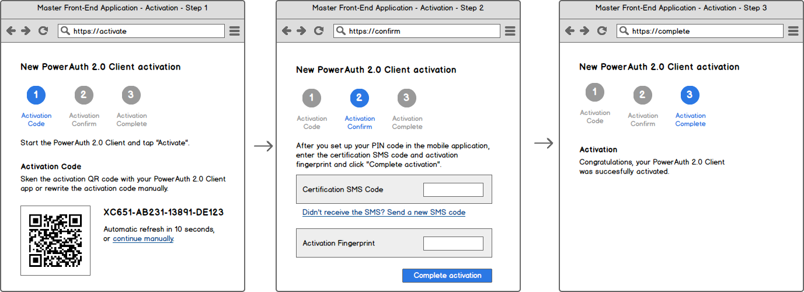

PowerAuth 2.0 is a protocol for a key exchange and for subsequent request signing designed specifically for the purposes of applications with high security demands, such as banking applications or identity management applications. It defines all items that are required for a complete security solution: a used cryptography, a security scheme and standard RESTful API end-points.
A typical use-case for PowerAuth 2.0 protocol would be assuring the security of a mobile banking application. User usually downloads a "blank" (non-personalized) mobile banking app from the mobile application market. Then, user activates (personalizes, using a key-exchange algorithm) the mobile banking using some application that is assumed secure, for example via the internet banking or via the branch kiosk system. Finally, user can use activated mobile banking application to create signed requests - to log in to mobile banking, send a payment, certify contracts, etc.
In PowerAuth 2.0, both client and server must first share the same shared master secret KEY_MASTER_SECRET. The KEY_MASTER_SECRET is a symetric key that is used as a base for deriving the further purpose specific shared secret keys. These derived keys are then used for an HTTP request signing. In order to establish this shared master secret, a secure key exchange (or "activation") must take a place.
Following components play role in activation:
Record associated with given PowerAuth 2.0 keys transits between following states during it's lifecycle:
After the key exchange is initiated, an activation record is created in the database in the CREATED state. In subsequent requests, client application must complete the activation. The system that initiated the activation (such as the web interface) must push the status of the token to the ACTIVE state before it can be used.
Following diagram shows transitions between activation states in more detail:

From the user perspective, PowerAuth 2.0 activation is performed as a sequence of steps in PowerAuth 2.0 Client and Master Front-End Application. Following steps (with possible UI / UX alterations) must be performed:
Following diagram shows example steps in Master Front-End Application - imagine the Internet banking as an example application.

Following diagram shows example steps in PowerAuth 2.0 Client - imagine the Mobile banking as an example application.

The sequence diagram below explains the PowerAuth 2.0 key exchange. It shows how PowerAuth 2.0 Client, Intermediate Server Application, Master Front-End Application and PowerAuth 2.0 Server play together in order to establish a shared secret between the client application and PowerAuth Server.
//TODO: Review the diagram

To describe the steps more precisely, the activation process is performed in following steps:
Master Front-End Application requests a new activation for a given user.
PowerAuth 2.0 Server generates an ACTIVATION_ID, ACTIVATION_ID_SHORT, a key pair (KEY_SERVER_PRIVATE, KEY_SERVER_PUBLIC) and ACTIVATION_OTP. Server also optionally computes a signature ACTIVATION_SIGNATURE of ACTIVATION_ID_SHORT and ACTIVATION_OTP using servers master private key KEY_SERVER_MASTER_PRIVATE.
ACTIVATION_ID = UUID4_GEN()ACTIVATION_ID_SHORT = BASE32_RANDOM_STRING(5) + "-" + BASE32_RANDOM_STRING(5) (must be unique among records in CREATED and OTP_USED states)ACTIVATION_OTP = BASE32_RANDOM_STRING(5) + "-" + BASE32_RANDOM_STRING(5)(KEY_SERVER_PRIVATE, KEY_SERVER_PUBLIC) = KEY_GEN("ECDH", "secp256r1")ACTIVATION_SIGNATURE = ECDSA(ACTIVATION_ID_SHORT + "-" + ACTIVATION_OTP, KEY_SERVER_MASTER_PRIVATE)Record associated with given ACTIVATION_ID is now in CREATED state.
Master Front-End Application receives an ACTIVATION_ID_SHORT, ACTIVATION_OTP and ACTIVATION_SIGNATURE (optional) and displays these information visually in the front-end so that a user can rewrite them in PowerAuth 2.0 Client.
User enters ACTIVATION_ID_SHORT, ACTIVATION_OTP and ACTIVATION_SIGNATURE (optional) in the PowerAuth 2.0 Client.
(optional) PowerAuth 2.0 Client verifies ACTIVATION_SIGNATURE against ACTIVATION_ID_SHORT and ACTIVATION_OTP using KEY_SERVER_MASTER_PUBLIC and if the signature matches, it proceeds.
isSignatureOK = ECDSA^inverse(ACTIVATION_ID_SHORT + "-" + ACTIVATION_OTP, KEY_SERVER_MASTER_PUBLIC)PowerAuth 2.0 Client generates its key pair (KEY_DEVICE_PRIVATE, KEY_DEVICE_PUBLIC).
(KEY_DEVICE_PRIVATE, KEY_DEVICE_PUBLIC) = KEY_GEN("ECDH", "secp256r1")PowerAuth 2.0 Client sends a request with an ACTIVATION_ID_SHORT and C_KEY_DEVICE_PUBLIC to the PowerAuth 2.0 Server (via Intermediate Server Application).
C_KEY_DEVICE_PUBLIC = BASE64(AES(KEY_DEVICE_PUBLIC, ACTIVATION_OTP), "UTF-8")PowerAuth 2.0 Server changes the record status to OTP_USED
PowerAuth 2.0 Server responds with ACTIVATION_ID, C_KEY_SERVER_PUBLIC, KEY_EPHEMERAL_PUBLIC and C_KEY_SERVER_PUBLIC_SIGNATURE.
(KEY_EPHEMERAL_PRIVATE,KEY_EPHEMERAL_PUBLIC) = KEY_GEN("ECDH", "secp256r1")EPH_KEY = ECDH(KEY_EPHEMERAL_PRIVATE, KEY_DEVICE_PUBLIC)C_KEY_SERVER_PUBLIC = AES(AES(KEY_SERVER_PUBLIC, ACTIVATION_OTP), EPH_KEY)C_KEY_SERVER_PUBLIC_SIGNATURE = ECDSA(C_KEY_SERVER_PUBLIC, KEY_SERVER_MASTER_PRIVATE)PowerAuth 2.0 Client receives an ACTIVATION_ID, C_KEY_SERVER_PUBLIC, KEY_EPHEMERAL_PUBLIC and C_KEY_SERVER_PUBLIC_SIGNATURE and if the signature matches the data, it retrieves KEY_SERVER_PUBLIC.
isSignatureOK = ECDSA^inverse(C_KEY_SERVER_PUBLIC, KEY_SERVER_MASTER_PRIVATE)EPH_KEY = ECDH(KEY_DEVICE_PRIVATE, KEY_EPHEMERAL_PUBLIC)KEY_SERVER_PUBLIC = AES^inverse(AES^inverse(C_KEY_SERVER_PUBLIC, ACTIVATION_OTP), EPH_KEY)Both PowerAuth 2.0 Client and PowerAuth 2.0 Server set CTR = 0 for given ACTIVATION_ID.
(optional) PowerAuth 2.0 Client displays H_K_DEVICE_PUBLIC, so that a user can verify the device public key correctness by entering H_K_DEVICE_PUBLIC in the Master Front-End Application (Master Front-End Application sends H_K_DEVICE_PUBLIC for verification to PowerAuth 2.0 Server via Intermediate Server Application).
H_K_DEVICE_PUBLIC = (TRUNCATE(SHA256(K_DEVICE_PUBLIC), 4) & 0x7FFFFFFF) % (10 ^ 8)PowerAuth 2.0 Client uses KEY_DEVICE_PRIVATE and KEY_SERVER_PUBLIC to deduce KEY_MASTER_SECRET using ECDH.
KEY_MASTER_SECRET = ECDH(KEY_DEVICE_PRIVATE, KEY_SERVER_PUBLIC)Master Front-End Application allows completion of the activation - for example, it may ask user to enter a code delivered via an SMS message. Master Front-End Application technically commits the activation by calling PowerAuth 2.0 Server (via Intermediate Server Application).
Record associated with given ACTIVATION_ID is now in ACTIVE state.
As an outcome of the previous activation steps, a single shared secret KEY_MASTER_SECRET is established for PowerAuth 2.0 Client and PowerAuth 2.0 Server. While additional shared secrets could be established by repeating the activation process, this may not be very handy in all situations, since the activation process is quite complex and not very user-friendly.
For this reason, PowerAuth 2.0 establishes the concept of derived keys. Each derived key is computed using the KDF algorithm (see "Implementation details" section for the definition):
KEY_DERIVED = KDF(KEY_MASTER_SECRET, INDEX)Following specific derived keys are reserved for the PowerAuth 2.0:
KEY_SIGNATURE = KDF(KEY_MASTER_SECRET, 1)KEY_TRANSPORT = KDF(KEY_MASTER_SECRET, 2)Client application may use these defined keys to deduce additional derived shared keys in order to get more fine-graned control over the security domain. For example, it may use KEY_SIGNATURE as a signature master key and deduce different security domains for signatures:
KEY_SIGNATURE_WEAK = KDF(KEY_SIGNATURE, 1)KEY_SIGNATURE_STRONG = KDF(KEY_SIGNATURE, 2)This, however, is not covered in PowerAuth 2.0 specification - for this version, only shared secrets for domains mentioned above are defined (request signing key, data transport key).
While PowerAuth 2.0 can be used for signing any type of data, the main objective of the protocol is to allow signing of HTTP requests sent to the server in order to prove consistency, authenticity and integrity (CIA) of the data that were sent in the request.
In practical deployment, Intermediate Server Application is responsible for building the normalized data for the purpose of computing the signature and passing it to PowerAuth 2.0 Server, since it knows details about the networking operation (for example, it knows what endpoint is being signed, what HTTP method it uses, etc.). PowerAuth 2.0 Server can then just simply accept any data and signature and perform signature validation - in ideal world, PowerAuth 2.0 Server should know nothing about the business domain it is used in.
The PowerAuth 2.0 signature is a number with 10 digits that is obtained in following manner:
KEY_DERIVED = HMAC_SHA256(KEY_SIGNATURE, CTR)SIGNATURE_LONG = HMAC_SHA256(DATA, KEY_DERIVED)SIGNATURE = (TRUNCATE(SIGNATURE_LONG, 4) & 0x7FFFFFFF) % (10^10)PowerAuth 2.0 Client sents the signature in the HTTP X-PowerAuth-Authorization header:
http
X-PowerAuth-Authorization: PowerAuth
pa_activationId="hbG9duZ19gyYaW5kb521fYWN0aXZhdGlvbl9JRaA",
pa_applicationId="Z19gyYaW5kb521fYWN0aXZhdGlvbl9JRaAhbG9du",
pa_nonce="kYjzVBB8Y0ZFabxSWbWovY3uYSQ2pTgmZeNu2VS4cg",
pa_signature="1234567890",
pa_version="2.0"
Normalized data to be signed are built using the following procedure:
DATA = ${REQUEST_METHOD}&${REQUEST_URI_IDENTIFIER_HASH}&${APPLICATION_SECRET}&${NONCE}&${REQUEST_DATA}
... where:
//TODO: Design better way of normalizing request data and URI
${REQUEST_METHOD} - HTTP method written in upper-case, such as GET or POST.${REQUEST_URI_IDENTIFIER_HASH} - SHA256 hashed identifier of given URI of the resource (hexadecimal format), for example SHA256("/api/payment"). The hashed value (in the example before, the "/api/payment" stirng) should be uniquely chosen for each URI, but can be of an arbitrary format.${APPLICATION_SECRET} - An application secret key, used to bind an application identification in the signature explicitly.${NONCE} - Random 16 bytes encoded as Base64 using UTF-8 encoding, serving as a cryptographic nonce.${REQUEST_DATA} - Request data
PARAM[i] = (KEY[i], VALUE[i]), i = 0 .. NKEY[i] first, then sort duplicate keys according to the VALUE[i]REQUEST_DATA = BASE64(CONCAT_ALL(CONCAT(KEY[j], VALUE[j], "="), "&", j = 0 .. N)) (let's assume that j are sorted indexes)REQUEST_DATA = BASE64(HTTP['body'])PowerAuth 2.0 Server can validate the signature using the following mechanism:
ACTIVE, terminate the validation.KEY_SERVER_PRIV and KEY_DEVICE_PUB from the record.KEY_MASTER_SECRET.
KEY_MASTER_SECRET = ECDH(KEY_SERVER_PRIV, KEY_DEVICE_PUB)KEY_SIGNATURE.
KEY_SIGNATURE = KDF(KEY_MASTER_SECRET, 1)Compute the expected signature for obtained data and check if the expected signature matches the one sent with the client. Since the PowerAuth 2.0 Client may be ahead with counter from PowerAuth 2.0 Server, server should try couple extra indexes ahead:
VERIFIED = false
for (CRT_ITER = CTR; CTR_ITER++; CRT_ITER < CRT + TOLERANCE) {
KEY_DERIVED = HMAC_SHA256(KEY_SIGNATURE, CTR_ITER)
SIGNATURE_LONG = HMAC_SHA256(DATA, KEY_DERIVED)
SIGNATURE = (TRUNCATE(SIGNATURE_LONG, 4) & 0x7FFFFFFF) % (10^10)
if (SIGNATURE == SIGNATURE_PROVIDED && !VERIFIED) {
VERIFIED = true
CTR = CTR_ITER
}
}
return VERIFIED
In order to assure a standard behavior of various PowerAuth 2.0 implementations, fixed endpoint and request/response structure between PowerAuth 2.0 Client and Intermediate Server Application is specified for the key exchange algorithm.
While the PowerAuth 2.0 Client technically communicates with an Intermediate Server Application, all response data are actually built in PowerAuth 2.0 Server and Intermediate Server Application just forwards data back and forth. Therefore, we will further assume that the phrase "PowerAuth 2.0 Server responds to PowerAuth 2.0 Client" is a shortcut for "Intermediate Server Application requests a response from PowerAuth 2.0 Server and forwards the response to PowerAuth 2.0 Client".
Each PowerAuth 2.0 implementation that is located on a specific base URL then has /pa/ prefixed endpoints by convention.
Application activation is a process of key exchange between a PowerAuth 2.0 Client and a PowerAuth 2.0 Server. During this process, an "activation record" is created on the PowerAuth 2.0 Server and related keys are stored on a PowerAuth 2.0 Client.
Exchange the public keys between PowerAuth 2.0 Client and PowerAuth 2.0 Server.
PowerAuth 2.0 Client sends a short activation ID, it's public key encrypted using activation OTP and a visual identification (or a "client name"):
id - Represents an ACTIVATION_ID_SHORT value (first half of an activation code).cDevicePubKey - Represents a public key KEY_DEVICE_PUBLIC AES encrypted with ACTIVATION_OTP
cDevicePubKey = AES(KEY_DEVICE_PUBLIC, ACTIVATION_OTP)clientName - Visual representation of the device, for example "Johnny's iPhone" or "Samsung Galaxy S".PowerAuth 2.0 Server responds with an activation ID, public key encrypted using the activation OTP and device public key (for technical reasons, an ephemeral key is used here), and signature of this encrypted key created with the server's private master key:
activationId - Represents a long ACTIVATION_ID that uniquely identifies given activation records.ephemeralPubKey - A technical component for AES encryption - a public component of the on-the-fly generated keypair.cServerPubKey - Encrypted public key KEY_SERVER_PUBLIC of the server.
EPH_KEY = ECDH(ephemeralPrivKey, KEY_DEVICE_PUBLIC)cServerPubKey = AES(AES(KEY_SERVER_PUBLIC, ACTIVATION_OTP), EPH_KEY)cServerPubKeySignature = ECDSA(cServerPubKey, KEY_SERVER_MASTER_PRIVATE)After receiving the response, PowerAuth 2.0 Client verifies cSeverPubKeySignature using server's public master key KEY_SERVER_MASTER_PUBLIC (optional) and decrypts server public key using it's private ACTIVATION_OTP.
signatureOK = ECDSA^inverse(cServerPubKey, KEY_SERVER_MASTER_PUBLIC)EPH_KEY = ECDH(KEY_DEVICE_PRIVATE, ephemeralPubKey)serverPubKey = AES^inverse(AES^inverse(cServerPubKey, ACTIVATION_OTP), EPH_KEY)Then, PowerAuth 2.0 Client deduces KEY_MASTER_SECRET:
KEY_MASTER_SECRET = ECDH(KEY_DEVICE_PRIVATE, serverPubKey)MIME-type: application/json
{
"requestObject": {
"id": "XDA57-24TBC",
"cDevicePubKey": "RUNESF9QVUJMSUNfS0VZX3JhbmRvbQ==",
"clientName": "My iPhone"
}
}
Status Code: 200
{
"status": "OK",
"responseObject": {
"activationId": "c564e700-7e86-4a87-b6c8-a5a0cc89683f",
"ephemeralPubKey": "MSUNfS0VZX3JhbmRvbQNESF9QVUJMSUNfS0VZX3JhbmRvbQNESF9QVUJ==",
"cServerPubKey": "NESF9QVUJMSUNfS0VZX3JhbmRvbQNESF9QVUJMSUNfS0VZX3JhbmRvbQ==",
"cServerPubKeySignature": "QNESF9QVUJMSUNfS0VZX3JhbmRvbQ=="
}
}
Get the status of an activation with given activation ID. The PowerAuth 2.0 Server response contains an activation status blob that is AES encrypted with KEY_TRANSPORT.
cStatusBlob = AES(statusBlob, KEY_TRANSPORT)PowerAuth 2.0 Client can later trivially decrypt the original status blob:
statusBlob = AES^inverse(cStatusBlob, KEY_TRANSPORT)Structure of the status blob is following:
0xDE 0xAD 0xBE 0xEF 1B:${STATUS} 4B:${CTR} 7B:${RANDOM_NOISE}
where:
MIME-type: application/json
{
"requestObject": {
"activationId": "c564e700-7e86-4a87-b6c8-a5a0cc89683f"
}
}
Status code: 200
{
"status": "OK",
"responseObject": {
"activationId": "c564e700-7e86-4a87-b6c8-a5a0cc89683f",
"cStatusBlob": "19gyYaW5ZhdGlvblkb521fYWN0aX9JRaAhbG9duZ=="
}
}
Remove an activation with given ID, set it's status to REMOVED. Activation can be removed only after successful verification of the signature.
X-PowerAuth-Authorization: PowerAuth ...
{
"requestObject": {
"activationId": "c564e700-7e86-4a87-b6c8-a5a0cc89683f"
}
}
Status code: 200
{
"status": "OK"
}
A PowerAuth 2.0 key exchange mechanism is based on ECDH key exchange agorithm with P256r1 curve. Additionally, an ECDSA (more specifically, SHA256withECDSA algorighm) is used for signing data sent from the service provider using a provider's Master Private Key. After a successful key exchange, both client and server have a shared master secret and they establish a shared counter initialized on 0 (later on, each signature attempt increments this counter). The PowerAuth 2.0 signature is computed using data, shared master secret and counter using the HMAC algorithm.
KDF (Key Derivation Function) is an algorithm used for deriving a secret key from a master secret key using a pseudo-random function. In case of PowerAuth 2.0 protocol, following implementation is used:
KEY_SECRET[INDEX] = KDF(KEY_MASTER, INDEX) = AES(INDEX ⊕ 0x0000..., KEY_MASTER)The ACTIVATION_ID must be in principle long, universally unique, random and with a temporary validity. UUID level 4 is therefore the selected format of this ID.
DO {
ACTIVATION_ID = UUID_GEN()
COUNT = SELECT COUNT(*) FROM ACTIVATION WHERE ACTIVATION.ID = ACTIVATION_ID
} WHILE (COUNT > 0);
Example of activation ID:
c564e700-7e86-4a87-b6c8-a5a0cc89683f
Note: A single UUID for an activation in CREATED state must be valid only for a limited period of time (activation time window), that should be rather short (in minutes at most).
Since the UUID is too long and inconvenient for practical applications, ACTIVATION_ID is exchanged between client and server automatically, using ACTIVATION_ID_SHORT - a shorter and more convenient identifier of an activation. This is the identifier user can rewrite or scan via the QR code. ACTIVATION_ID_SHORT is a Base32 string, 2x 5 characters:
DO {
ACTIVATION_ID_SHORT = BASE32_RANDOM_STRING(5) + "-" + BASE32_RANDOM_STRING(5)
COUNT = SELECT COUNT(*) FROM ACTIVATION WHERE (ACTIVATION.STATE = 'CREATED' OR ACTIVATION.STATE = 'OTP_USED') AND ACTIVATION.ID_SHORT = ACTIVATION_ID_SHORT
} WHILE (COUNT > 0);
Example of short activation ID:
XDA57-24TBC
In order to explicitly bind a client application with the cryptography, an application ID and application secret are introduced. Both values follow the same format - 16B encoded as Base64, application ID must be unique.
Both identifiers are embedded in the PowerAuth 2.0 Client application (for example, defined as a constants in the source code).
Application ID is sent with every PowerAuth Signature as pa_applicationId.
Application secret is a part of the PowerAuth signature (sent in pa_signature), it enters the algorithm in final HMAC_SHA256 as a part of the DATA.
The ACTIVATION_OTP is a Base32 string, 2 x 5 characters:
ACTIVATION_OTP = BASE32_RANDOM_STRING(5) + "-" + BASE32_RANDOM_STRING(5)
Example of activation OTP:
TB24C-A57XD
This format matches the ACTIVATION_ID_SHORT format.
Note: A single ACTIVATION_OTP must be valid only for a limited period of time (activation time window), that should be rather short (in minutes at most). Also, the activation OTP can be used only once - the moment client application sends and receives the encrypted public keys, it must be marked as "already used".
Entering ACTIVATION_ID_SHORT, ACTIVATION_OTP and ACTIVATION_SIGNATURE can be expedited for example by using QR code for the storage. PowerAuth 2.0 defines using following format of information:
${ACTIVATION_ID_SHORT}-${ACTIVATION_OTP}#${ACTIVATION_SIGNATURE}
Example concatenated string:
XDA57-24TBC-TB24C-A57XD#1234567890
The device and server keys are generated using ECDH algorithm with P256 curve:
java
public KeyPair generateKeyPair() {
try {
KeyPairGenerator kpg = KeyPairGenerator.getInstance("ECDH", "BC"); // we assume BouncyCastle provider
kpg.initialize(new ECGenParameterSpec("secp256r1"));
KeyPair kp = kpg.generateKeyPair();
return kp;
} catch (NoSuchAlgorithmException | NoSuchProviderException | InvalidAlgorithmParameterException ex) {
Logger.getLogger(AirBondKeyGenerator.class.getName()).log(Level.SEVERE, null, ex);
}
return null;
}
Shared key KEY_MASTER_SECRET is generated using following algorithm (ECDH):
java
public SecretKey generateSharedKey(PrivateKey privateKey, PublicKey publicKey) throws InvalidKeyException {
try {
KeyAgreement keyAgreement = KeyAgreement.getInstance("ECDH", "BC"); // we assume BouncyCastle provider
keyAgreement.init((Key) privateKey, new ECGenParameterSpec("secp256r1"));
keyAgreement.doPhase(publicKey, true);
final byte[] sharedSecret = keyAgreement.generateSecret();
byte[] resultSecret = new byte[16];
for (int i = 0; i < 16; i++) {
resultSecret[i] = (byte) (sharedSecret[i] ^ sharedSecret[i + 16]);
}
return keyConversionUtilities.convertBytesToSharedSecretKey(resultSecret);
} catch (NoSuchAlgorithmException | NoSuchProviderException | InvalidAlgorithmParameterException ex) {
Logger.getLogger(AirBondKeyGenerator.class.getName()).log(Level.SEVERE, null, ex);
}
return null;
}
All communication should be carried over a properly secured channel, such as HTTPS with correct server configuration and certificate issued with a trusted certificate authority. Client may implement certificate pinning to achieve better transport level security.
Server sends it's encrypted public key C_KEY_SERVER_PUBLIC to the client with a signature C_KEY_SERVER_PUBLIC. This signature is created using the server's "Master Private Key" KEY_SERVER_MASTER_PRIVATE. Since the same key is used for all activations, the "latent private key fingerprints" may accumulate over the time, making it simpler to attack the private key. Therefore, it is important to select the proper trusted certification authority to issue the keys and renew the key after certain time period. Usually, this also requires timely update of the clients that bundle the "Master Public Key".
The master keypair is generated using the same algorithm as above (with P256 curve).
In order to generate the signature for given bytes, following code is used:
java
public byte[] signatureForBytes(byte[] bytes, PrivateKey privateKey) {
Signature ecdsaSign = Signature.getInstance("SHA256withECDSA", "BC");
ecdsaSign.initSign(privateKey);
ecdsaSign.update(bytes);
byte[] signature = ecdsaSign.sign();
return signature;
}
To verify the signature, following code is used:
java
public boolean isSignatureCorrectForBytes(byte[] bytes, byte[] signature, PublicKey publicKey)
Signature ecdsaVerify = Signature.getInstance("SHA256withECDSA", "BC");
ecdsaVerify.initVerify(publicKey);
ecdsaVerify.update(bytes);
boolean result = ecdsaVerify.verify(signature);
return result;
}
Following keys are used for the PowerAuth cryptography scheme.
| name | created as | purpose | |
|---|---|---|---|
| `KEY_DEVICE_PRIVATE` | ECDH - private key | Generated on client to allow construction of `KEY_MASTER_SECRET` | |
| `KEY_DEVICE_PUBLIC` | ECDH - public key | Generated on client to allow construction of `KEY_MASTER_SECRET` | |
| `KEY_SERVER_PRIVATE` | ECDH - private key | Generated on server to allow construction of `KEY_MASTER_SECRET` | |
| `KEY_SERVER_PUBLIC` | ECDH - public key | Generated on server to allow construction of `KEY_MASTER_SECRET` | |
| `KEY_SERVER_MASTER_PRIVATE` | ECDH - private key | Stored on server, used to assure authenticity of `KEY_DEVICE_PUBLIC` while transfering from server to client | |
| `KEY_SERVER_MASTER_PUBLIC` | ECDH - public key | Stored on client, used to assure authenticity of `KEY_DEVICE_PUBLIC` while transfering from server to client | |
| `ACTIVATION_OTP` | Random OTP | A 16b random OTP generated during activation, AES encrypts/decrypts data sent from server to client and vice versa | |
| `KEY_MASTER_SECRET` | ECDH - pre-shared | A key deduced using ECDH derivation, `KEY_MASTER_SECRET` = (`KEY_DEVICE_PRIVATE`,`KEY_SERVER_PUBLIC`) = (`KEY_SERVER_PRIVATE`,`KEY_DEVICE_PUBLIC`) | |
| `KEY_SIGNATURE` | KDF derived key from `KEY_MASTER_SECRET` | A key deduced using KDF derivation with INDEX = 1, `KEY_SIGNATURE` = KDF(`KEY_MASTER_SECRET`, 1), used for subsequent request signing | |
| `KEY_TRANSPORT` | KDF derived key from `KEY_MASTER_SECRET` | A key deduced using KDF derivation with INDEX = 2, `KEY_TRANSPORT` = KDF(`KEY_MASTER_SECRET`, 2), used for encrypted data transport |